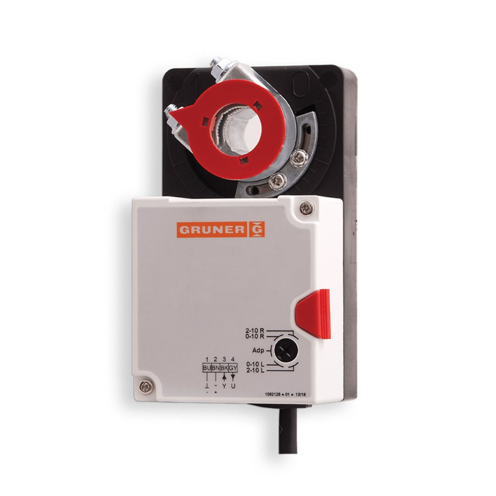

☎ 0216 344 48 19
Endüstriyel tesisleriniz için Damper Motorları kategorisinde 4 ürün. GES ürünleri Klimasun güvencesiyle; kurumsal e-fatura ve teknik destek ile.

Klimasun Damper Motorları kategorisinde GES gibi markaların ürünlerini ve yedek parçalarını sunar.
Ürünlerin bir kısmı stoktan aynı gün sevk edilir; stokta olmayanlar Almanya ve İtalya'dan sipariş üzerine orijinal olarak tedarik edilir.
İlgilendiğiniz ürünleri teklif sepetine ekleyip WhatsApp (0532 424 6219) veya e-posta (info@klimasun.com.tr) ile gönderin; kurumsal teklifiniz hızla hazırlanır.
Evet, Klimasun'da tüm satışlar kurumsal e-faturalıdır.